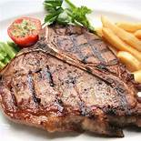

Italian Rib Eye

Description
Ingredients
- 10 cloves garlic, roughly chopped
- 1 tablespoon chopped fresh oregano
- 1 tablespoon chopped fresh basil
- 1 tablespoon chopped fresh parsley
- 1 teaspoon chopped fresh rosemary
- 1 tablespoon kosher salt
- ½ cup olive oil
- 2 tablespoons balsamic vinegar
- 1 teaspoon white pepper
- 3 (10 ounce) boneless beef ribeye steaks, cut 1 inch thick
Steps
- Place the garlic, oregano, basil, parsley, rosemary, and salt into a mortar or small bowl, and mash into a coarse paste. Stir in the olive oil, balsamic vinegar, and white pepper until evenly blended. Scrape half of the mixture into a separate small bowl; set aside. Spread the remaining half of the herb mixture evenly over the steaks. Set aside to marinate for 1 hour.
- Preheat an outdoor grill for medium-high heat, and lightly oil the grate.
- Cook the steaks on the preheated grill for 7 minutes, then turn over, and coat with the reserved herb mixture. Continue cooking 7 minutes more for medium-well, or until your desired degree of doneness has been reached.